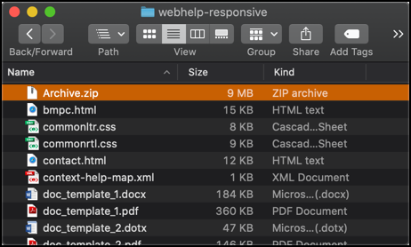
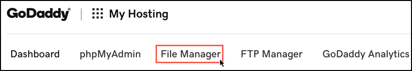

This procedure steps through the process that was undertaken to build and deploy this
website on a Mac.
Note: Under normal circumstances, a procedure like this would be broken into
several tasks with many assumptions called out. Keep in mind that the purpose of
this procedure is to demonstrate an ability to leverage a breadth of DITA authoring
capabilities.
The following tools were utilized for this task:Table 1. Tools for building philipboltonjr.com
| Tool |
Purpose or Role |
| Oxygen XML Editor |
Used to author the source files and publish the output web
files |
| Snagit |
Used for screenshots and playable gifs |
| GoDaddy |
Used to purchase domain, hosting, and web security
services |
| Homebrew |
Used as prerequisite to installing Git |
| Git |
Used version controlling the source and output files |
| GitHub |
Used as source and output file repository |
| Terminal |
Used as Git CLI |
Obtain Oxygen XML Editor
-
In a browser, navigate to https://www.oxygenxml.com/xml_editor/download_oxygenxml_editor.html.
-
Click Download.
A form appears alongside the download pop-up.
-
Select a location to save the Oxygen XML Editor download.
-
Fill-out the form with a valid email address in order to receive the 30-day
trial license.
-
Click Get Trial License.
-
Check email and copy the trial license text.
-
Open the Oxygen XML Editor download package.
-
Paste the license information.
Install Git, create a Git repository in GitHub, add SSH public key to
GitHub, and clone repository locally
-
Open Terminal.
-
In a browser, navigate to https://brew.sh/ and copy the following "Install Homebrew" command and
paste it into Terminal.
$ /usr/bin/ruby -e "$(curl -fsSL https://raw.githubusercontent.com/Homebrew/install/master/install)"
-
Hit return to install Homebrew.
-
After the Homebrew installation completes, navigate to https://git-scm.com/book/en/v1/Getting-Started-Installing-Git and copy the following command in
Terminal.
-
Hit return to install Git.
-
In a browser, navigate to https://github.com.
-
Login with credentials.
-
In the top toolbar, click .
A form will appear.
-
In the Repository name field, type dita_portfolio.
-
In the Description field, type a description.
-
Keep the Public repository setting selected.
-
Select the checkbox to Initialize this repository with a
README.
-
Click Create repository.
-
From the repository page, click Clone or download.
A dropdown menu appears.
-
In the upper right of the dropdown menu, click Use
SSH.
-
Click the copy button to copy the clone repository path which is in the
following format:
git@github.com:<username>/<repository name>.git
-
In Terminal, navigate to the desired root folder for the Git repository with
the cd command.
For example:
-
Run the following command:
$ git clone git@github.com:pbjStand/dita_portfolio.git
Experience an error and bang head against the table since the SSH keys
were forgotten.
-
Navigate to the public key and copy it.
-
In a browser, navigate to https://github.com.
-
In the top toolbar, click on the profile picture then
Settings.
-
From the Settings page, click SSH and GPG Keys.
-
Click New SSH key.
-
Paste the public key.
-
Click Add SSH key.
-
Repeat Step 26.
Terminal will prompt for a passphrase.
-
Enter passphrase for the key.
The dita_portfolio repository is established locally.
Authoring website source files and generating website output
files
-
Open the Oxygen XML Editor application.
-
From the Mac menu bar, select .
The new project dialog box appears.
-
For the new project local, select the local
dita_portfolio
folder.
-
Click Save.
-
Create DITA document.
This is means the source files such as DITA maps and topics.
-
From the Mac toolbar, select .
A pop-up will appear.
-
Select the DITA Map WebHelp Responsive output type.
-
Click Apply.
This will generate the website output files in the following relative
directory dita_portfolio/out/webhelp-responsive.
Stage, commit, and push files from local repository to remote GitHub
repository
-
In Terminal, run the following command from the
dita_portfolio
root directory:
This will stage all repository changes (i.e., file additions and file
removals).
-
Now run the following comand:
$ git commit -am '<insert commit message>'
This takes a snapshot of files in the version history.
-
Last, run the following command:
Terminal will prompt for a passphrase.
-
Enter passphrase for the key.
The latest committed local dita_portfolio version is
pushed to the remote GitHub repository.
Create zip of website output files
-
Open Finder.
-
Navigate to
dita_portfolio/out/webhelp-responsive.
-
Select all files inside the
webhelp-responsive folder with
Cmd-A.
-
On the selected files, .

All website files are now contained in the
webhelp-responsive folder as file called
Archive.zip.
GoDaddy purchase, file upload, and security enhancement
-
In a browser, navigate to https://www.godaddy.com.
-
Buy domain, hosting, and security services.
Condensing this step for everyone's sake. The outcome is that the
philipboltonjr.com domain is now associated with the hosted service.
-
From the GoDaddy My Products tab under the Web Hosting section, click
Manage.
-
From the web hosting management page, click the File
Manager.

-
Double click the public_html folder.
This folder is where website files are exposed to the internet.
-
Click Upload.
A new upload page appears.
-
Select (or drag and drop in the window) the
Archive.zip
file.
-
Go back to the File Manager page.
-
Click Reload to refresh the files.
-
In the file list, find the
Archive.zip and .
The files are now uncompressed and the website is available momentarily.
Check philipboltonjr.com to verify.
-
To ensure that the website visitors feel safe, consider
redirecting HTTP traffic to HTTPS with the following GoDaddy guidance: https://www.godaddy.com/help/redirect-my-cpanel-website-to-https-27870

 A form will appear.
A form will appear.
 The new project dialog box appears.
The new project dialog box appears.